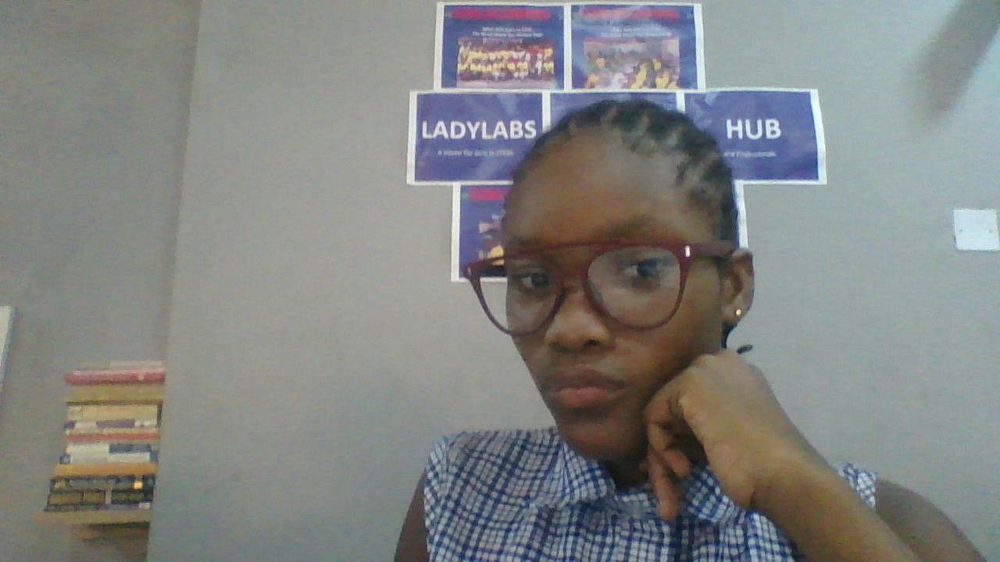

Home
Muhammed Aliyah Abike
Queen's College Yaba Lagos
I am a technology enthusiast
About
My name is Aliyah Muhammed and I am currently in SS1, I am 13 years old. I have been at Queen's College Yaba Lagos for 3 years now; I joined at the start of JSS1, and have thoroughly enjoyed myself there. The school is great, the people are fantastic and the atmosphere is one that makes you actually want to go to school.
I myself am a girl, born and raised as one; so I know first hand that I can be very frail and take many chances. I’m also the target for a lot of people, for emotional support and other things. My parents depend a lot on me to take care of things when they can’t, especially because I'm the only girl.
I live in a family of five out of which we are three children, i am the only girl and i am also the middle born . My mother is a busineess woman and my father is a musician. My best food are Plantain and egg, yam porridge and indomie and egg. My hobbies are singing, reading, cycling, dancing and swimming.
My future ambition is to be a lawyer, a mass comunicator and a model. the reason why i want to be a lawyer is because a lawyer counsel clients about legal options and representing them in criminal or civil court proceedings. I also want to fight for people's right and judge the oppressed. I want to be a great lawyer because great lawyers get the work done too, but they do it and give practical advice in the context of knowing the client’s business. they also look for ways to make legal services more valuable to clients.